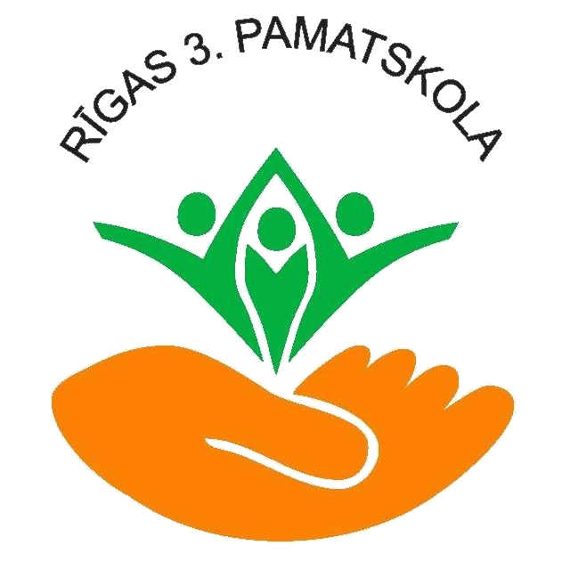

Cita valoda
"Cita valoda" – jo katram bērnam ir ko teikt.
Mūsu vīzija ir radīt vienotu, praktiski izmantojamu mācību materiālu bāzi pirmsskolas vecuma bērniem ar garīgās attīstības (GAT) un autiskā spektra traucējumiem (AST).
Mēs zinām, ka runāta valoda nav vienīgais veids, kā izteikt sevi. "Cita valoda" ir radīta kā alternatīva bērniem, kuru saziņas līdzeklis nav vārdi, dodot viņiem iespēju tikt sadzirdētiem un saprastiem. Lai šie materiāli būtu patiesi noderīgi un atbilstu bērnu reālajām vajadzībām, to saturs tapis ciešā sadarbībā ar pieredzes bagāto Rīgas 3. pamatskolas pirmsskolas izglītības pedagogu kolektīvu.